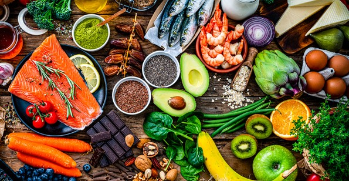

1. Alimentação e Nutrição
Breve introdução...
Muitas vezes, ouvimos falar que o nosso organismo é como uma máquina, mesmo que muito complexa. Para que todo este sistema funcione adequadamente precisamos de grandes quantidades de energia e obtemo-las através da nossa alimentação. Está é a nossa fonte vital que nos permite viver!
No entanto, existe uma grande diferença entre alimentarmo-nos e nutrir-nos!
1.1. Alimentação vs. Nutrição
Alimentação engloba tudo o que comemos, todos e quaisquer alimentos indiscriminadamente. Nutrição pressupõe fornecer ao organismo os nutrientes indispensáveis ao seu correto funcionamento e nas proporções adequadas.
Assim conclui-se que por muito que nos estejamos a alimentar, poderemos não nos estar a nutrir!
2. Nutrição
Uma visão geral...
A nutrição é algo muito difícil de generalizar já que pessoas diferentes, com metabolismos e estilos de vida distintos, conduzem a necessidades energéticas e nutritivas muito discrepantes. Mesmo assim, e de uma maneira geral a nutrição é constituída por duas grandes componentes essenciais:
- O que comemos e que se insere nas nossas necessidades nutritivas.
- Quanto comemos e que se insere nas nossas necessidades energéticas.
2.1. O que comemos
Tal como diz o antigo provérbio português “Somos o que comemos”, aquilo que ingerimos diariamente é um reflexo da nossa saúde.
Nutrirmo-nos pressupõe que sigamos um plano (mesmo que por vezes um pouco desleixado) de forma a nos alimentarmos de uma forma saudável e não deixarmos nutrientes básicos de lado.
2.2. Quanto comemos
Não tão importante como o ponto anterior, mas digno de referência, está quanto comemos. Por outras palavras, refere-se ao nosso gasto calórico que consiste num valor numérico e individual de referência que devemos tentar seguir de uma maneira mais ou menos aproximada.
Apresenta sim, mais valor em casos de pessoas que tentem diminuir ou aumentar o seu peso uma vez que permite um controlo mais rigoroso.
Concretamente, o gasto calórico diário pode ser relacionado com a intensidade e quantidade de exercício físico e ainda com a taxa metabólica basal (TMB) que nos indica para as nossas características individuais, a energia que o nosso organismo necessita apenas para manter as suas funções vitais, ou seja, o mínimo de energia que devemos obter através da alimentação.
Deixamos aqui o link para uma outra página onde poderão calcular a TMB: Calcular a TMB
3. Conciliar quantidade e qualidade
Dieta mediterrânea e a sua polivalência...
A dieta mediterrânea é das mais equilibradas e geralmente adapta-se a todos os indivíduos. Permite ao organismo obter os nutrientes necessários e nas proporções certas. A Roda dos Alimentos é uma interpretação gráfica das proporções dos grupos alimentares da Dieta Mediterrânea. Ela não se limita à alimentação: é um completo estilo de vida nos quais se incluem descanso, atividade física e ainda o convívio e o lazer por exemplo.
3.1. Componente nutricional da Dieta Mediterrânea
- Cereais e derivados ou hidratos de carbono: altamente calóricos sendo a principal fonte de energia.
- Hortícolas: ricos em nutrientes, fibras, e vitaminas benéficas bem como minerais (Ferro, Cálcio, Potássio). Ajudam na regulação das atividades celulares e principalmente na manutenção da função cardiovascular.
- Frutas: principal fonte de vitaminas e antioxidantes. Oferecem uma maior imunidade e uma menor propensão a doenças cardiovasculares e do foro oncológico.
- Laticínio: ricos em nutrientes que facilitam a absorção de minerais e vitaminas e bactérias que beneficiam a flora intestinal.
- Proteínas: essenciais na recuperação de tecidos musculares.
- Leguminosas: ricas em vitaminas do complexo B.
- Gorduras: essenciais na regulação da temperatura corporal e na formação de hormonas e enzimas. Especial preferência para gorduras saturadas como o azeite.